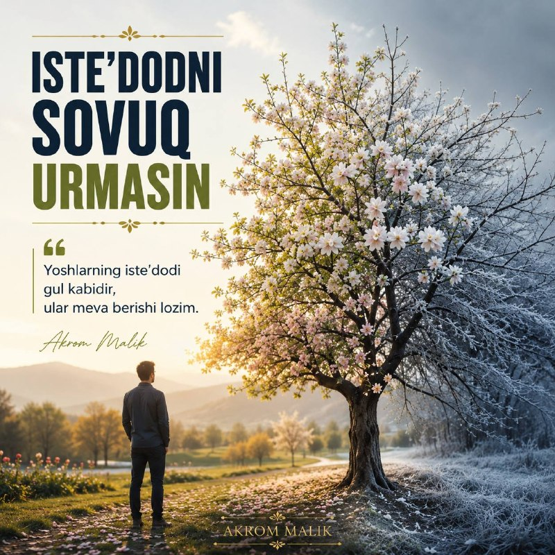

O‘qishga, yozishga, fikrlashga va haqiqatni topishga intiladigan har bir yoshning…

O‘qishga, yozishga, fikrlashga va haqiqatni topishga intiladigan har bir yoshning muayyan darajada iste’dodi mavjuddir. Masalan, o‘qib, o‘zlashtira oladi; topshiriqlarni yaxshi bajaradi; dalillarni yaxshi tahlil qilib, yechim bera oladi; fikrini ochiq-oydin bayon eta oladi; foydali yangiliklar topa oladi va hokazo. Lekin bu iste’dodlar yetarlicha meva bermaydi.
Bahorda daraxtlar qiyg‘os gullaydi, shu gullarning har biri mevaga aylanadi – yoshlarning iste’dodi gul kabidir, ular meva berishi lozim; daraxtlarning gullari meva bermasligi sabablaridan biri – to‘satdan qor yog‘ib, sovuq tushmog‘idir; bu omillar gullarni to‘kib, meva berish imkonidan ayiradi. Yoshlarning ham iste’dodlari nima uchun meva bermasligi haqida, aniqrog‘i qanday sabablar bilan ularning sovuq urib ketishi haqida gaplashamiz.
Har qanday iste’dod tarbiyaga muhtoj. Tarbiyasiz yutuqlar imkonsiz. Tarbiya beruvchi murabbiy deyiladi. Har bir yoshga murabbiy kerak.
Yoshlar sabrsizdir. Diqqat va e’tiborini jamlashda qiynaladilar. Ko‘pni ko‘rgan, halol va pok murabbiy ilm olishga oid topshiriq bersa, uni shoshilmay, sabr bilan bajarish lozim. Aks holda, vaqt o‘tadi, ilm bilan ozuqa olmagan inson yutqazadi.
Aksar yoshlar tanilishga o‘ch bo‘lishadi. Odamlar meni tanisa, hurmat qilsa deya orzu qiladi. Shu sababli ko‘pchilik jo‘jaxo‘rozlar ijtimoiy tarmoq orqali shuhrat qozonishga urinadilar. Ko‘rishlar soniga qarab, qoniqish hosil etadilar. Bu kamolot yo‘lidagi eng katta illatdir. Chunki qalbga kirgan shon-shuhrat huzuri qalbdagi xolislik va poklikni ketkazadi. Ko‘zga shira bo‘lib tushadi. G‘aflat zanjiriga bog‘laydi. Riyokorlik va ikkiyuzlamachilikka boshlaydi. Samimiyatdan mahrum etadi. Maqtanchoqlikka giriftor qiladi. Gapirishga gap tugagach, o‘z hayoting haqida uyalmay gapirishni boshlaysan: yolg‘iz qoldim, ijtimoiy tarmoq ro‘zasini tutdim va hokazo. Odam o‘z sirini aytaversa, bo‘m-bo‘sh qoladi hamda o‘zini kuchsiz, zaif sezadi.
Yoshlar taniqli odamlar bilan tanishmoqqa, ular bilan yaqin bo‘lmoqqa ham urinadilar. Bu ham kasallik. Tanishlarining obro‘si bilan o‘zini juda muhim va aqlli deb ko‘rsatish ilinji va eng katta sharmandalik shu. Odamning hayotda ustozi bir kishi bo‘ladi. O‘sha ustoz tavsiyasi bilan boshqa ustozlarga boriladi. Har kimni ustoz deb etagidan ushlash imkonsiz. Ustoz degani ham haddan oshmagan, chuqur ketmagan, sayozlikka o‘tirmagan, balki o‘rtani – me’yorni tutgan zot bo‘lsin.
Shunday qilib, sabrli, quntli, shon-shuhratga giriftor bo‘lmagan, kamtar va kamsuqum yoshlarning kelajagidan umid bor. Asosiysi, tanilishga bo‘lgan o‘chlik olovini o‘chira olsak, bas.
Akrom MALIK